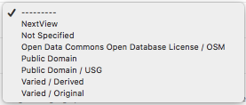

Working with Metadata¶
In Exchange, metadata can easily be edited for all layers, maps and documents. Keeping metadata current and thorough is important in maintaining data relevance, quality and accuracy. The more information provided in the metadata section, the more other users will understand the value of the dataset.
As you learned in Working with layers, some metadata is added when importing a layer. The basics, such as the title, abstract and category are add by the user, while information such as the projection system, bounding box coordinates, and reference links are automatically created by Exchange, and are unable to be edited by users. Additional information is added through editing the metadata.
Edit or add metadata¶
- From the search results page, click the View Details link for the map, document or layer that you’d like to edit. The details page for that resource will open.
- Click the Edit <resource> button, and select the Edit button under Metadata. The Edit Metadata page will display.


- Edit the information fields to include anything pertinent to the resource. Note: Once you begin to edit the metadata, the Category field becomes mandatory.

Owner - The Exchange user who uploaded the document or layer, or created the map.
Title - This should be the original title of the resource, and will not have the unique identifier assigned by Exchange.
Date - This is the date the resource was created in Exchange.
Date type - The identification of when a given event occurred.
Click on the Date type menu, and select whether this is the creation date (of the original data), publication date (into Exchange) or the revision date for the resource.

Edition - The version of the cited resource.

Abstract - A brief narrative summary of the content of the resource.
Purpose - A summary of why the resource was created.
Maintenance Frequency - Frequency with which modifications and deletions are made to the data after it is first produced.

Regions - Select a region/country from the list which best fits the data. Hold down Ctrl, or Command on a Mac, to select more than one.

Restrictions - Select from a list of limitations which can be placed on the access or use of the data. Provide a description of other restrictions and prerequisites for accessing and using the resource or metadata in the “Other Restrictions” textbox.
License - Select data licensing requirements from the list. Not all data has licensing requirements.

Language - Select the language used within the dataset.
Spatial representation type - This explains the method used to represent geographic information in the dataset.

Temporal extent start / end - Set the time period covered by the content of the dataset.
Select the start and end date of the temporal data by clicking on the calendar icon, and choosing a date.

Supplemental information - Include any other descriptive information about the dataset.
Data quality statement - Provide a general description of the validity and legitimacy of the dataset. Explain any changes in the data over time.

Select the checkboxes for the options you’d like to turn on/off.

- Ensure the box is checked if:
- You’d like to ensure no one is able to edit the metadata
- The dataset is featured on the Exchange homepage
- The resource is published, and made available through search for other users
Note: If you have added a resource to Exchange, and you’re unable to find it through a search, verify it has been published.
- The raster data is part of a mosaic
- The vector has a time attribute that you’d like to enable for temporal viewing
- The raster has associated elevation information
Category - Data is divided into categories, which assists in the grouping and search of available geographic datasets. These categories correspond to those on the Exchange homepage.

Attributes (layers only) - All of the attributes for a layer will be listed. Edits can be made to the Label, Description, and Display Order fields.

Click your mouse in the field you’d like to edit, and make your changes. You can select the up or down buttons in the Display Order field to change the order of where the attribute will display in the attribute list.
Note: If you change the order of one attribute, make sure you have changed the corresponding attribute to prevent duplicates.
Select the checkbox beneath the Visible column to turn off/on the visibility of an attribute. This will affect the attribute visibility on the map.
Link to (documents only) - Select a map or layer in the drop down list. This will associate the document to that resource.

Regex (layers only) - Select the regular expression for the time and/or elevation of raster data.

Site URL and Featured Map URL (maps only) -

Keywords - Provide terms to associate to your dataset. This will allow other users find the resource based on terms related to its content. Multiple keywords can be added, separated by a comma.
Point of Contact - This is the individual to contact, should you have questions regarding the metadata.
Metadata Author - The individual who originally added the metadata content. This will most likely be the same as the Point of Contact.
Note: You are not able to edit the Owner, Point of Contact or Metadata Author.

- When you’re finished, click the Update button to save your changes.